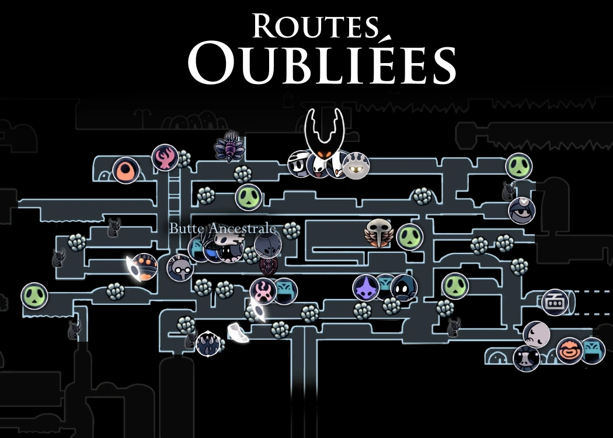
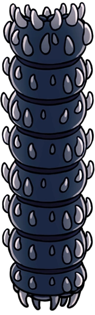
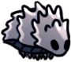
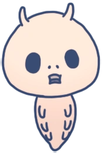
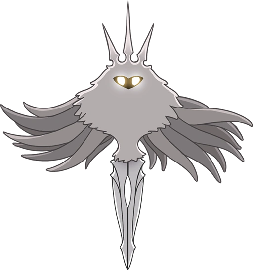

Routes Oubliées
Une région qui s'étend sous la ville de Dirtmouth. Elle permet de rejoindre de nombreuses autres régions d'Hallownest.
Carte
Lore
Situées juste sous la surface, les Routes Oubliées sont un ensemble de tunnels et de cavernes autrefois grouillants de vie. De nombreux voyageurs et marchands les empruntaient afin de rejoindre les différentes régions d'Hallownest qu'ils permettent d'atteindre. La Voie du Pèlerin, une route menant à la Cité des Larmes, débute dans l'Ouest de la zone. Avec la propagation de L'Infection, les voyageurs cessèrent peu à peu d'utiliser ces routes. Seules les bêtes sauvages et les citoyens, désormais fous, d'Hallownest arpentent encore ces tunnels vides.
Connexions
Les Routes Oubliées sont reliées à ces zones :
Ennemis
-
Nouveau-né Aspid
Des créatures venant tout juste de naître. Ces jeunes aspids attaquent instinctivement les intrus. Ces petits sont nés pour tuer ! Cependant, ce ne sont que de jeunes aspids que vous pouvez facilement broyer entre vos dents.Restez prudent de ne pas vous laisser submerger par leurs très grand nombre.
-
Aspid Chasseresse

Une créature chassant souvent en groupe. Terrasse ses proies en crachant un liquide corrosif. Des prédateurs astucieux qui essaieront de vous tuer à distance. Chargez dans le tas et découpez-les. Vous verrez que ce ne sont pas des créatures si rusées, une fois qu'elles sont mortes.
-
Mère Aspid
Une créature portant les oeufs de sa couvée dans son ventre. En cas de danger, elle peut les faire éclore pour donner naissance à ses petits, qui l'aideront à affronter les intrus. Des créatures sans aucun scrupule se servant de leurs petits comme arme contre l’ennemi ! Cela est véritablement très effrayant, mais j'admire leur ingéniosité. De bons chasseurs ne font pas toujours de bon parents.
-
Crawlid

Un charognard timide. Arpente les cavernes à la recherche de nourriture. Triste et pitoyable. Mérite à peine d’être tué.
-
Ancien Baldur
Une créature volumineuse, recouverte d'une armure épaisse. Se rétracte à l'intérieur de sa coquille lorsqu'elle est menacée. Au fur et à mesure qu'elles vieillissent, ces créatures deviennent trop lourdes et grumeleuses pour pouvoir rouler comme elles le souhaitent. Alors, elles se recroquevillent et s'isolent du monde. À quoi peuvent-elles penser à l'intérieur de leur coquille ? Peut-être à des temps meilleurs.
-
Glimback

Une créature lente et robuste. Les cristaux qui poussent sur son dos fournissent une protection supplémentaire contre les ennemeis aériens. Elles sont larges et bien protégées, mais lentes et dociles. Les insectes d'Hallownest se servaient de ces créatures en les forçant à transporter leurs chariots et leurs machines.
-
Goam
Une bête possédant une carapace épaisse. Elle jaillit à la surface pour attraper ses proies entre ses dents. Ces bêtes semblent immunisées à la plupart des dégâts. Vous pouvez donc vous amuser à aiguiser vos armes sur leur carapace épaisse. Cela ne semble pas les déranger.
-
Gruzzer

Une créature idiote. Bourdonne aléatoirement et se heure contre tout ce qui l'entoure. Ce sont des créatures idiotes qui semblent à peine être conscientes de leur environnement. Cela en fait des proies faciles pour planter vos dents dedans. Mais pourquoi ce comportent-elle ainsi ? C'est comme si elles cherchaient un moyen de mourir.
-
Carcasse Malmeneuse

La carapace vide d'un insecte, animé par une force étrange. Attaque férocement toutes les créatures sur son chemin qui ne sont pas infectées. Ces corps sans vie ambulants sont remplis d'une brume orange épaisse. Ça a un goût un peu sucré et maladif. C'était vraiment immonde. Je vous conseillerais de ne pas les manger après les avoir tués.
-
Carcasse de la défense

La carapace vide d'un excellent gardien d'Hallownest, animé par une force étrange. Son instinct le pousse encore à garder son poste contre les intrus. Plus gros et plus forts que leurs frères, ces insectes doivent voler leurs armes sur les corps sans vie d'autres créatures. Ils ne quittent jamais leur poste et ne chassent jamais. Ils restent éternellement de garde, attaquant tout ce qui s'aventure trop près d'eux.
-
Carcasse Cornue

La carapace vide d'un insecte, animé par une force étrange. Utilise sa longue corne pour attaquer toutes les créatures sur son chemin qui ne sont pas infectées. Même après leur mort, ces insectes sont tellement arrogants. Ils sont beaucoup trop fiers de leur longue corne ! J'aime bien la leur arracher.
-
Carcasse Guerrière
La carapace vide d’un insecte, animé par une force étrange. Manie un aiguillon et un bouclier. Ramollis par une vie de luxe sur plusieurs générations, ces insectes ne possèdent pas de griffes, ou d’armures, ou même de venin. Ceux qui veulent pouvoir se protéger, eux-mêmes, sont contraints de se fabriquer des armes à base de pierres, de minerais ou de coquilles.
-
Carcasse Sauteuse

La carapace vide d'un insecte, animé par une force étrange. Il saute et attaque instinctivement toutes les créatures sur son chemin qui ne sont pas infectées. Les insectes de l'ancien Hallownest ne chassaient pas eux-mêmes leur nourriture. Ils préféraient qu'elle leur soit directement apportée. Cela explique pourquoi ils étaient si faibles. Cela explique aussi pourquoi leur royaume s'est effondré pour disparaître dans l'oubli.
-
Maggot

Être le plus faible du royaume d'Hallownest. Créature méprisée et forcée de s'occuper des basses besognes. Des créatures sans défense, faites pricipalement de graisse sucrée. Elles font d'excellentes provisions pour les longs trajets et elles sont encore meilleures après les avoir rôtis sur une flamme nue. Ignorez-les si elles tentent de négocier pour que vous leur laissiez la vie sauve. Elles n'ont rien à offrir.
-
Fixeur
Des créatures appartenant à une guilde mystérieuse. Elles sont obnubilées par l’entretien des panneaux en tous genres. Les insectes d’Hallownest avaient pour obsession de construire des choses. Quels esprits étranges ils avaient !
-
Tiktik
Une créature se servant de ses petites griffes acérées pour grimper le long des murs et sur les toits. Passe son temps à arpenter les routes et les cavernes proches de la surface de ce royaume. Si vous êtes patient, il vous suffit d’attendre qu’elles viennent à vous pour les tuer.
-
Mouche Vengeresse
Un prédateur volant. Poursuis ses proies sans relâche. Ces féroces petits chasseurs pourchasseront même les créatures qui font plusieurs fois leur taille. Admirable! Cependant, j’en ai dévoré des centaines sans avoir fait le moindre effort, car ce sont des créatures très faibles.
-
Carcasse Vagabonde
La carapace vide d'un insecte, animé par une force étrange. Erre sur les routes où elle vivait autrefois. Ces insectes "civilisés" d'Hallownest étaient faibles de leur vivant et ils sont tout aussi faibles après leur mort. Réduisez-les à l'état de poussière !
-
Baldur

Une créature agressive dès la naissance. Se met en boule et se propulse sur les intrus qui s’aventurent sur son territoire. Les chasseurs plus jeunent se réjouissent d’attraper ces créatures pour les faire rouler sur le sol et jouer avec. Si cela vous donne envie, je vous encourage à faire la même chose.
-
Mouche Vengeresse Enragée

Une Mouche Vengeresse dont le corps a été déformé par une infection persistante. Très agressive. Une infection qui se transmet de créature en créature et qui donne de la force et du courage. Cependant, l'infection semble aussi asservir toute volonté. Pourriez-vous faire un tel pacte ?
-
Carcasse Baveuse
Le corps d'un insecte, complètement envahi par l'infection. Crache un liquide corrosif. Cette infection qui s'est abattue sur Hallownest, il y a tellement longtemps... on raconte que plus vous luttez, plus l'infection s'empare de vous.
-
Gruzzer Instable

Un Gruzzer dont le corps est enflé par l'infection. Son corps est prêt à éclater. Un horrible fluide visqueux et un gaz nocif commencent à couler plus haut. La source de cette pestilence existe-t-elle ? Si c'est le cas, je ne l'ai jamais vue.
-
Carcasse Violente
Une carapace vide, enragée par une infection massive. Charge sur les ennemis sans aucun instinct de préservation. Les insectes d'Hallownest ont été complètement déformés par cette infection ancienne. D'abord, ils tombent dans un sommeil profond, puis ils se réveillent avec un esprit qui ne leur appartient plus et avec un corps qui a déjà commencé à se déformer.
-
Blob Parasite

Organisme unicellulaire, complètement infecté. Erre sans but. De l’air particulièrement étrange provenant d’en haut s’infiltre dans Hallownest depuis des années. Une partie de cet air est devenue liquide, et une partie de ce liquide est devenue chair, et cette chair a pris vie. Je ne sais pas trop quoi penser de tout cela.
Boss de la Zone
Mawlek Maussade

Un seul Mawlek Maussade peut être trouvé hors route dans les Routes Oubliées, loin de ses frères vivants dans Bassin Ancestral. Il se trouve au milieu de restes fossilisés de ce genre et les appelle à se reproduire. Cette bête sauvage a été rendue folle à la fois par sa solitude et par L'Infection qui a commencé à couvrir son corps d'ampoules. Il devient agressif s'il n'est pas capable de se mêler aux siens.
Faux Chevalier

Le Faux Chevalier est un Maggot portant l'armure de Hegemol, l'un des Cinq Grand Chevaliers d'Hallownest. Cette frêle créature cherchait à protéger les autres membres son espèce vivant dans l'entrepôt abandonné au coeur des Routes Oubliées. Il découvrit un jour Hegemol apparemment endormi dans son armure et la lui vola dans l'espoir d'acquérir plus de force. Bien que son acte à l'origine ne fut pas influencé par l'Infection, il succomba plus tard sous son contrôle.
Mère Gruz

Mère Gruz peut être trouvée bloquant le chemin direct vers un village deserté au bas des Routes Oubliées. Elle dort, épuisée du fait qu'elle porte ses enfants, et se réveille lorsqu'elle est frappée par le Chevalier. Lorsqu'elle est vaincue, son estomac s'ouvre pour révéler une nuée de Gruzzers.
Champion Raté
Le Champion Raté est la variante des Rêves du Faux Chevalier, plus rapide et plus résistante que son homologue physique.
Hollow Knight

Le Hollow Knight est le Vaisseau élu par le Roi Pâle pour sceller Radiance et sauver Hallownest de l'Infection. Comme ses frères et sœurs, il est l'enfant du Roi et de la Reine d'Hallownest, né dans les Abysses afin de fusionner avec le pouvoir du Vide. Cette situation à la naissance était aussi supposée le laisser sans esprit, sans volonté et sans voix, pour empêcher l'influence de Radiance sur lui. Cependant, sa pureté a été mal jugée, ternie par une pensée inculquée, un lien avec le Roi Pâle qui est celui qui l'a élevé.
Sans tenir compte de son impureté, le Hollow Knight fut entraîné et élevé pour devenir éventuellement un Vaisseau mature. Radiance fut scellée en lui et il fut enchaîné à l'intérieur du Temple de l’Oeuf Noir, dans lequel il devait contenir l'Infection pour l'éternité. Cependant, à cause des impuretés susmentionnées, Radiance put toujours exercer son influence. Les conséquences furent la réapparition de l'Infection et, par la suite, la chute du royaume.
Avec le temps, le Hollow Knight disparu de la mémoire du royaume déchu. Seul le mémorial situé au centre de la Cité des Larmes témoigne de son sacrifice pour le salut d'Hallownest.
Après un certain temps, le pouvoir de Radiance finit par éclater du corps du Hollow Knight, fissurant son masque. Cet événement fut le catalyseur qui amena le Chevalier à retourner à Hallownest. Ce dernier partit donc en quête de libérer le Hollow Knight après avoir tué les trois Rêveurs scellant l'entrée du Temple de l'Oeuf Noir.
Radiance
Radiance est un Être supérieur de lumière, similaire aux Essences et opposé au Vide, son ancien ennemi. La Tribu des Papillons de Nuit est née de sa lumière et la vénère en retour.
Après que Le Roi Pâle soit arrivé en Hallownest, il offra la conscience et l'individualisme à ses habitants, la tribu des Papillons de Nuit tournèrent le dos à la Radiance pour vénérer le roi. Ce faisant, Radiance fut presque oubliée. Pourtant des traces de sa mémoire demeurèrent, comme une statue sur la Couronne d'Hallownest. De plus, sa mémoire à commencé à se répandre à travers le nouveau royaume débutant son âge d'or. Bientôt, tout Hallownest commença à rêver de son ancienne déesse, leur apparaissant comme une lumière flamboyante. Ces rêves peuvent briser l'esprit des insectes et asservir leur volonté à la sienne . Mais le roi et ses sujets résistèrent à son souvenir. C'est ainsi que commença la manifestation de l'Infection. À travers l'Infection, Radiance offre l'unité aux insectes au prix de leur esprits, ils deviennent alors incapable de penser.
Le Roi Pâle essaya de stopper l'infection en scellant Radiance dans un Vaisseau. Ces créatures, imprégnées du Vide afin d'être sans esprit et sans volonté, étaient censées pouvoir résister à l'influence de la Radiance. L'Hollow Knight a été choisi, élevé et a grandi dans cet objectif. Radiance fut donc scellée en lui, et le Vaisseau enchaîné à l'intérieur du Temple de l'Oeuf noir. Cependant, le Roi pâle a échoué dans sa tentative de création d'un Vaisseau à l'esprit pur. Par son erreur, Radiance demeure capable de pénétrer les rêves des insectes. Elle a fini par anéantir le haut-royaume dont le roi a disparu, mais a laissé le reste d'Hallownest intact.
Le temps a passé, Hallownest est devenu un mythe alors que Radiance restait scellée. Son influence a finalement commencé à s'échapper du Hollow Knight. Elle a ravivé toute la puissance de l'Infection, menaçant à nouveau le royaume et incitant Le Chevalier à revenir à Hallownest.
Évènements
- Obtention du sort : Esprit Vengeur
- Obtention d'un morceau d'âme
- Obtention de deux morceaux de masque
- Accès au temple de l’Oeuf Noir
- Station Coléoptère : Station des Routes Oubliées
- Rencontre du marchand/Grand Maître d’Aiguillon : Sly
- Rencontre de la mardhande de charmes Salubra
- Rencontre du Quirrel
- Rencontre d'Hornet
- Rencontre de Père Larve
- Rencontre de Myla